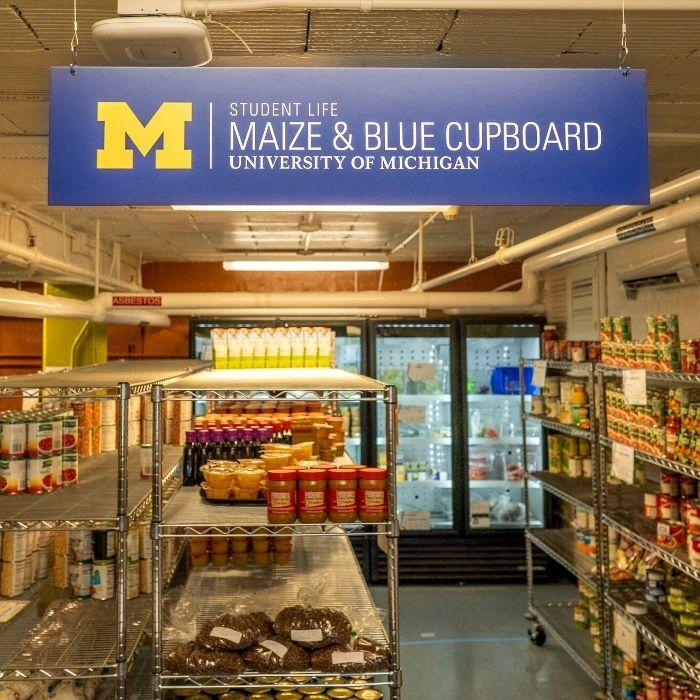

Skip to Main Content
Skip to Main Content
Welcome to the Maize and Blue Cupboard
The Maize and Blue Cupboard provides resources, support, and access to food for the University of Michigan community. We aim to reduce food insecurity and foster a healthier campus environment.
Hours and Location
Address: 420 S State St, Ann Arbor, MI 48109
Hours:
- Monday - Friday: 10 AM - 6 PM
- Saturday: 12 PM - 4 PM
- Sunday: Closed
How to Access the Pantry

Students, staff, and faculty can access the Maize and Blue Cupboard by presenting a valid MCard. No appointments are necessary.
Donate to the Pantry
We welcome donations of non-perishable food items, personal care products, and household supplies. Donation bins are located at the pantry entrance. Monetary donations can be made online through the official donation portal.
Volunteer Opportunities
Join us in making a difference! Volunteers help with organizing donations, stocking shelves, and assisting visitors. Sign up online to become a volunteer and support the Maize and Blue Cupboard's mission.